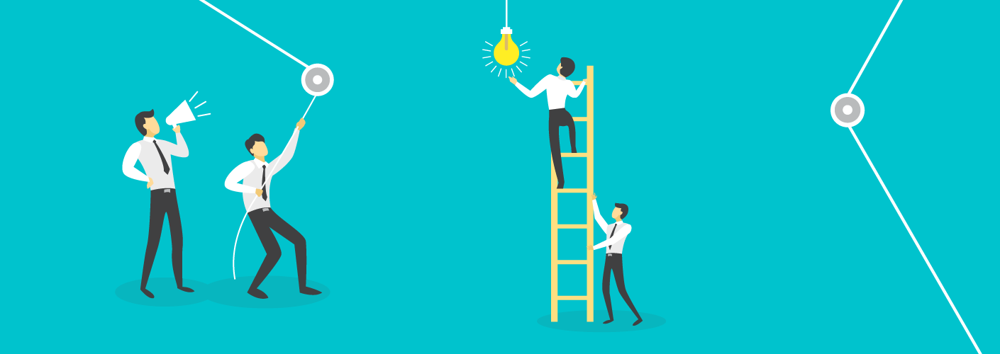

Pressione Esc para voltar
Por que me candidatar?
Sobre mim
Expectativas
Gostaria de adquirir mais experiencia na área de informática, principalmente em Web e as linguagens de programação que serão ofertadas pelo projeto, além disso gostaria de enriquecer meu currículo com uma possível validação de estágio obrigatório, ademais seria um projeto ideal para aprender a lidar com a responsabilidade de se envolver em projetos de trabalho;
Por esses motivos estou me candidatando com esperança de ter uma ótima experiencia e sair do projeto com mais conhecimento!

Meu nome é Lucas de Almeida Rocha tenho -- anos – meses e – dias e sou aluno do 2° ano como tecnico em informatica no CEFET-MG. Desde pequeno gosto muito de computação e acabei tendo interesse na área e no curso. Quero aproveitar ao máximo os conhecimentos oferecidos pelo CEFET-MG então continuo a me esforçar bastante nesse segundo ano na instituição.
Minhas expectativas sobre o projeto são de evoluir minhas habilidades na programação web, na minha noção de design, na minha criatividade, e na minha responsabilidade. As oportunidades a qual o projeto oferece me deixam bastante animado e espero ser uma experiência interessante trabalhar ao decorrer deste ano com comprometimento máximo.
Diante disso o que mais espero é ser aceito pela seleção para por em pratica minhas habilidades com programação e me tornar alguém melhor no que faço.
